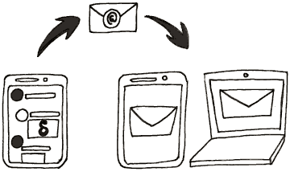

Juttmy is a new chat app that sends messages via e-mails, encrypted if possible, with Autocrypt. You do not have to sign up anywhere, just use your existing e-mail account with Juttmy.

With Juttmy, you can write to every existing e-mail address - even if the recipient is not using the Juttmy app. No need for the recipient to install the same app as yours, as with other messengers.
Juttmy automatically shows:
Other messages do not appear automatically, and are to be found in Contact requests. If desired a chat can be started from there.
You can add a profile picture in your settings. If you write to your contacts or add them via QR code, they automatically see it as your profile picture.
Contacts who don’t use Juttmy see it as an E-Mail attachment.
For privacy reasons, no one sees your profile picture until you write a message to them.
Your profile picture isn’t sent with every message, but regularly enough that your contacts will re-receive your profile picture, even if they add a new device.
As with other E-Mail programs like Thunderbird, K9-Mail, or Outlook, the program needs the password so you can use it to send mails. Of course, the password is stored only on your device. The password is only transmitted to your E-Mail provider (when you login), which has access to your mails anyway.
If you use an E-Mail provider with OAuth2 support like gmail.com or yandex.ru, there is no need to store your password on the device. In this case, only an access token is used.
As Juttmy is Open Source, you can check the Source Code if you want to verify that your credentials are handled securely. We are happy about feedback which makes the app more secure for all of our users.
Depending on the operating system in use, you may be asked to grant permissions to the app. This is what Juttmy does with these permissions:
A verified group is a chat that guarantees safety against an active attacker. All Messages in a verified chat view are e2e-encrypted, and members can join by scanning a “QR invite code”. All members are thus connected with each other through a chain of invites, which guarantee cryptographic consistency against active network or provider attacks. See countermitm.readthedocs.io for the R&D behind this feature.
As of Dec 2019, a “verified group” remains an experimental feature. It is continuously improved and many bugs have been fixed since the original introduction in 2018. However, there remain cases, especially with large groups where inconsistencies can occur, or messages become unreadable. Early 2020 a security review is upcoming, and several new developments around qr-join protocols are taking place so chances are we remove the “experimental” label not too far in the future.
Either delete yourself from the member list or delete the whole chat. If you want to join the group again later on, ask another group member to add you again.
As an alternative, you can also “Mute” a group - doing so means you get all messages and can still write, but are no longer notified of any new messages.
Yes. Juttmy implements the Autocrypt Level 1 standard and can thus E2E-encrypt messages with other Autocrypt-capable apps.
Juttmy also supports a strong form of end-to-end encryption that is even safe against active attacks, see “verified groups” further below.
Nothing.
Juttmy apps (and other Autocrypt-compatible e-mail apps) share the keys required for end-to-end-encryption automatically as the first messages are sent. After this, all subsequent messages are encrypted end-to-end automatically. If one of the chat partners uses a non-Autocrypt e-mail app, subsequent messages are not encrypted until an Autocrypt-compliant app is available again.
If you want to rather avoid end-to-end-encrypted e-mails by default, use the corresponding Autocrypt setting in “Settings” or “Advanced settings”.
If you are within immediate distance of the chat partner:
If you are not near the chat partner, you can check the status manually in the “Encryption” dialog (user profile on Android/iOS or right-click a user’s chat-list item on desktop):
For end-to-end-encryption, Juttmy shows two fingerprints there. If the same fingerprints appear on your chat partner’s device, the connection is safe.
For transport encryption, this state is just shown there
A little padlock shown beside a message denotes whether the message is end-to-end-encrypted from from the given sender.
If there is no padlock, the message is usually transported unencrypted e.g. because you or the sender have turned off end-to-end-encryption, or the sender uses an app without support for end-to-end-encryption.
Autocrypt is used for establishing e2e-encryption with other Juttmy and other Autocrypt-capable mail apps. Autocrypt uses a limited subset of OpenPGP functionality.
Juttmy implements countermitm setup-contact and verified-group protocols to achieve protection against active network attacks. This goes beyond the opportunistic base protection of Autocrypt Level 1, while maintaining its ease of use.
1:1 chats with a verified contact and verified groups are not the same, even if there are only 2 people in the verified group. One difference is that you could easily add more people to the group, but there are other implications as well.
Verified groups are invariably secured. Any breakage (cleartext or wrongly signed messages etc.) will be flagged and such messages will not be shown in this chat. You can trust all messages in this verified-checkmark chat to have not been read/altered by middle parties.
1:1 chats are opportunistic, it is meant to allow people to communicate no matter if they change e-mail clients, devices, setups etc. That’s why there is no verification checkmark, even if you have verified the contact.
No, OpenPGP doesn’t support Perfect Forward Secrecy. Perfect Forward Secrecy works session-oriented, but E-Mail is asynchronous by nature and often used from multiple devices independently. This means that if your Juttmy private key is leaked, and someone has a record of all your in-transit messages, they will be able to read them.
Note that if anyone has seized or hacked your running phone, they will typically be able to read all messages, no matter if Perfect Forward Secrecy is in place or not. Having access to a single device from a member of a group, will typically expose a lot of the social graph. Using e-mail addresses that are not easily tracked back to persons helps group members to stay safer from the effects of device seizure.
We are sketching ways to protect communications better against the event of device seizure.
As Juttmy is a decentralized messenger, the metadata of Juttmy users are not stored on a single central server. However, they are stored on the mail servers of the sender and the recipient of a message.
Each mail server currently knows about who sent and who received a message by inspecting the unencrypted To/Cc headers and thus determine which e-mail addresses are part of a group. Juttmy itself could avoid unencrypted To/Cc headers quite and always put them only into the encrypted section. See Avoid sending To/CC headers for verified groups. For opportunistic chats the main concern is how it affects other mail apps who might participate in chats.
Many other e-mail headers, in particular the “Subject” header, are end-to-end-encryption protected, see also this upcoming IETF RFC.
Yes. The best way is to send an Autocrypt Setup Message from the other e-mail client. Look for something like Start Autocrypt Setup Transfer in the settings of the other client and follow the instructions shown there.
Alternatively, you can import the key manually in “Settings” or “Advanced settings” and then “Import secret keys”. Caution: Make sure the key is not protected by a password, or remove the password beforehand.
If you don’t have a key or don’t even know you would need one - don’t worry: Juttmy generates one as needed, you don’t have to hit a button for it.
With a very good chance, the problem is that your key is encrypted and/or uses a password. Such keys are not supported by Juttmy. You may remove the passphrase encryption and the password and try the import again. If you want to keep your passphrase you’ll have to create an e-mail alias for use with Juttmy such that Juttmy’s key is tied to this e-mail alias.
Format wise, Juttmy supports common OpenPGP private key formats, however, it is unlikely that we will support 100% of all private keys of any sources. This is also not the main focus of Juttmy (in fact, the large majority of the Juttmy users will not have any key before they start using Juttmy). However, we try to support private keys from other sources as good as possible.
Removing the password from the private key will be different, depending on the software you use to manage your PGP keys. With Enigmail, you can set your password to an empty value in the Key Management window. With GnuPG you can set it via the command line. For other programs, you can find a solution online.
If you want to use the same account on different devices, you should export a backup from the old device, and import it into the new device:
This is an experimental setting for some people who are experimenting with server-side rules. Not all providers support this, but with some you can move all mails with a “Chat-Version” header to the Juttmy folder. Normally, this would be done by the Juttmy app.
Watching the Inbox makes sense to turn off, if you have both:
In this case, Juttmy doesn’t need to watch the Inbox.
Sending a copy of your messages to yourself ensures that you receive your own messages on all devices. If you have multiple devices and don’t turn it on, you see only the messages from other people, and the messages you send from the current device.
The copy is sent to the Inbox, and then moved to the Juttmy folder; it’s not put into the “Sent” folder. Juttmy never uploads anything to the Sent folder because this would mean uploading a message twice (once through SMTP, and once through IMAP to Sent folder).
The default setting for copy-to-self is “no”.
The only reason one wants to watch the Sent folder is if you are using another mail program (like Thunderbird) next to your Juttmy app, and want your MUA to participate in chat conversations.
However, we recommend using the Juttmy Desktop Client; you can download it on get.juttmy.chat. The option to watch the “Sent” folder might go away in the future. It was introduced at a time where there was no Juttmy Desktop client available on all platforms.
Some people use Juttmy as a regular email client, and want to use the Inbox folder for their mail, instead of the Juttmy folder. If you disable “Watch Juttmy folder”, you should also disable “move chat messages to Juttmy”. Otherwise, deleting messages or multi-device setups might not work properly.